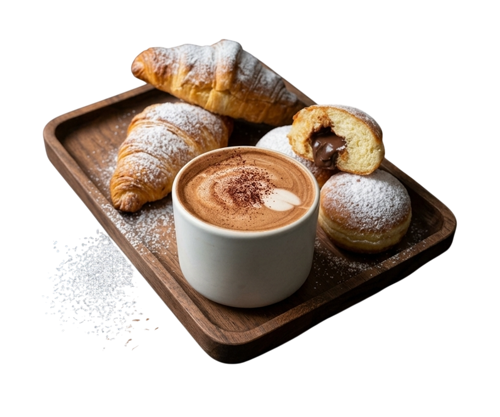
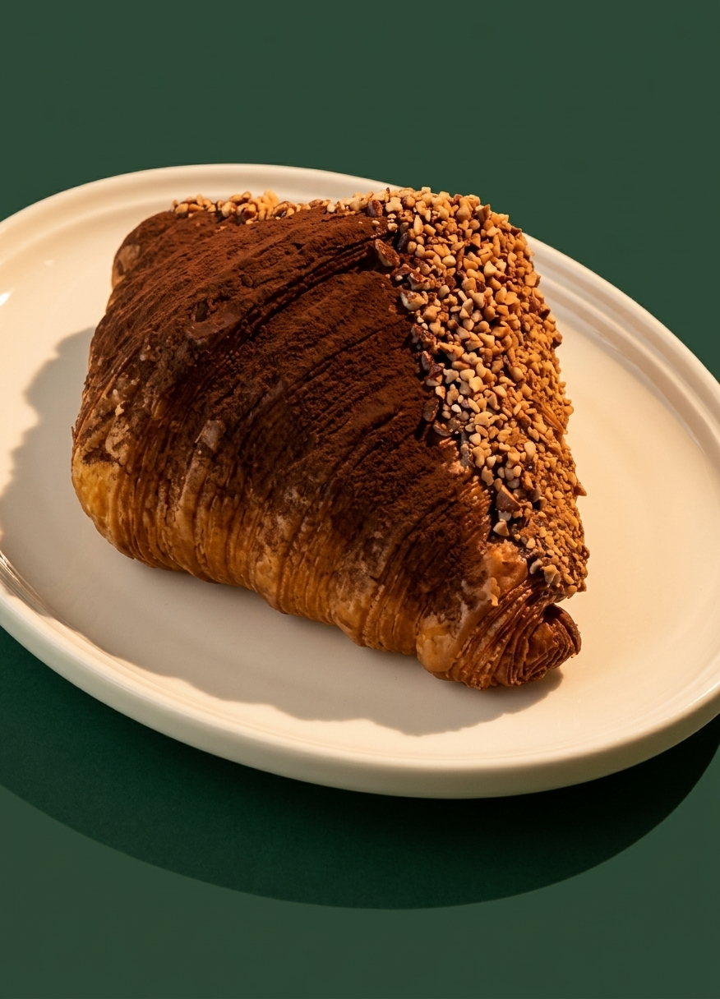
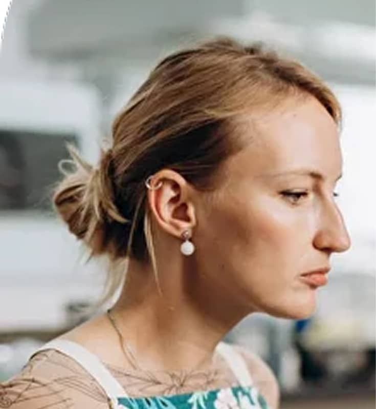
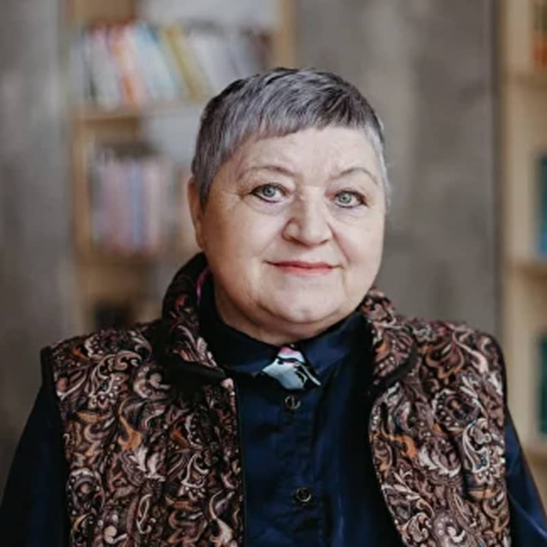
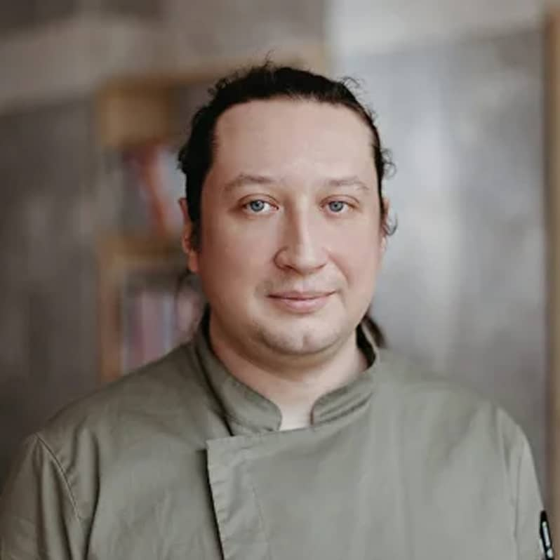

Завтраки весь день
с восьми утра и до девяти вечера

Свежая выпечка из собственной печи, сертифицирована любовью к маслу
Завтраки весь день для каждого гостя с восьми утра
Почему к нам возвращаются
Три простые причины заглянуть на Ленина, 10 — и остаться дольше, чем планировали.
с восьми утра и до девяти вечера
от яичницы до свежей выпечки
со своей пекарней
Пекарня, завтраки, сидр



Как проходит день
Приходите, когда удобно. Сценарий подскажет само место.
Круассаны из печи и кофе по дороге
Шакшука с фетой или завтрак Искателя
Французский тост и сезонные напитки
Дуэт сидра и закусок перед закрытием
Что сегодня ищем?
Меню меняется по сезону. Это проверенные находки — дальше доверьтесь любопытству.
Полное меню
Перец, баклажан, томаты, яйцо и хлеб тартин
490 ₽
Булочка бриошь, лосось слабой соли и голландез
590 ₽
Томаты черри, халуми на гриле и хлеб тартин
390 ₽
Черника, голубика, мёд и сливочное масло
320 ₽
Печёная тыква, мёд и семечки
330 ₽Кокосовое молоко, манго и чиа
350 ₽
Томаты, базилик, оливковое масло и тартин
520 ₽
Авокадо, зелень, халуми на гриле и цитрус
480 ₽
Куриная печень, карамельный лук и бриошь
390 ₽
Бриошь, черника, голубика и шантильи
420 ₽
Шантильи, ягодный соус и сметана
380 ₽Малина, рикотта и сахарная пудра
220 ₽
Круассан, халуми, бекон, фасоль и томаты
680 ₽
Киноа, яйцо, авокадо и овощи
520 ₽
Картофель, сметана и зелёный лук
380 ₽Индейка, сыр, салат и соус
420 ₽Ростбиф, рукола и горчичный соус
450 ₽Халуми, песто и вяленые томаты
390 ₽
Слоёное тесто и сливочное масло
180 ₽
Шоколадная начинка и обсыпка
220 ₽Лаймовый крем и цедра
200 ₽
Эспрессо, сливки и лаванда
320 ₽
Тёмный шоколад и маршмеллоу
300 ₽
Облепиха, мёд и имбирь
280 ₽Приходите за комфортом и наслаждением.
Говорите вполголоса, здесь ценят спокойствие.
Завтраки весь день — время есть.

Влюблённым взглядам всегда зелёный свет.
Отмечайте нас в соцсетях.
Интерьеру XIX века нужна ваша бережность.
О вас заботятся
За зал отвечают Татьяна, Юлия, Настя и Максим. За печь — Кирилл, Саша, Влад и шеф-пекарь Дима.

ЮлияГлавный искатель
ТатьянаФея чистоты
ДимаШеф-пекарьОтзывы
Очень-очень вкусно позавтракали! Геркулес правильный, подача заслуживает отдельного плюсика, девушки-официантки приветливые…
Шли по наводке коренного смолянина. Рекомендация оправдалась: воздушное тесто, начинки в меру, круассаны большие…
Нашёл место случайно: приятно удивлён сервисом, выпечкой и атмосферой. Круассан с шоколадом — пять из пяти…
Пончики и шоколадный круассан довезла в поезде в коробочке — дома наслаждались разнообразием вкусов…
Идеальное место, чтобы позавтракать рано утром по прибытию. Волшебная выпечка, вкусный кофе и апельсиновый фреш…
Просто великолепное место! Чудесная выпечка, хлеб тоже пекут. Не удержались — взяли с собой тартин…
Ооочень вкусный круассан за 120 рублей! Нигде таких низких цен за такой уровень не видела…
Интерьер изящный, персонал доброжелательный. Вкусный кофе, еда. Выпечка — огонь, окна панорамные…
Ваш следующий маршрут
Приходите, когда удобно. А если далеко — доставка каждый день с восьми утра и до шести вечера.